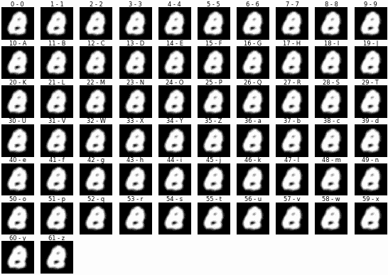
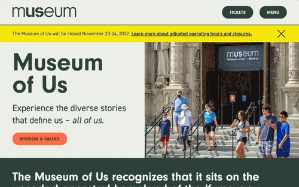
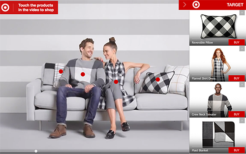
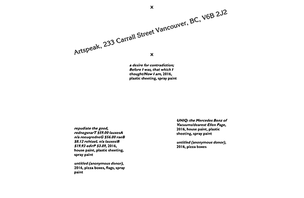

I'm a software engineer with lots of experience building websites and UI. I usually work on the frontend, where I strive to make things that are fun and accessible. I also like machine learning and mysterious websites.
I live in Portland, Oregon. When I'm not programming, I'm an artist and a gardener.
I'd love to hear from you!
zackrdavis@gmail.com • GitHub • Linkedin

Fonting with GANs
Project writeup: Learning the space of handwritten letters and numbers with PyTorch,
then inverting to find the best match for specific images.

Museum of Us
A new website for the Museum of Us in San Diego, designed by Rebecca
Friedman. Built for speed, accessibility, and pleasant editing with
Next.js and Sanity CMS.

A Robot Actor
Developed for Richard Maxwell's Paradiso, the robot
delivers lines, visually tracks fellow actors, and generates a
unique script during each performance. Paradiso was a
NYT Critic's Pick.
New York City Players
Typed-while-you-watch homepage for the New York City Players theater
company. Designed by Scott Ponik.
Homunculus House
Simulated views and illumination for a house rolling downhill.
Presented at the Portland2014 Biennial. 4-channel projected video,
no sound.

FuiszVideo
Frontend engineering at FuiszVideo, an ad publishing platform that used machine vision to make interactive videos.

Artspeak
Website for a beloved Vancouver arts institution. Designed by Scott
Ponik and Julie Peeters.